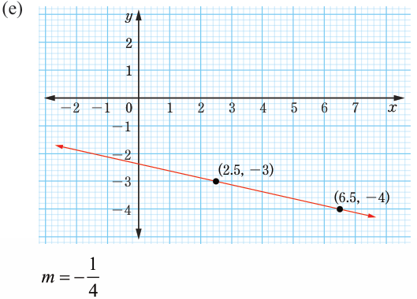
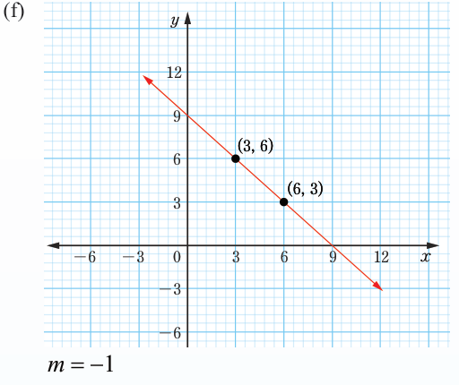

(e)
m=−14
(f)
m=-1
5. (a) y=−4x+8, m=−4, (0,8)
(b) y=16x+13, m=16, (0,13)
(c) y=2x−2, m=2, (0,−2)
(d) y=−34x+234, m=−34, (0,234)
(e) y=−34x−1, m=−34, (0,−1)
(f) y=−43x−3, m=−43, (0,−3)
Mathematics Form One